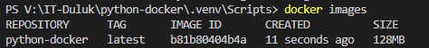
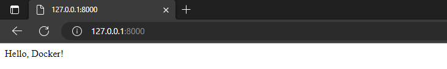
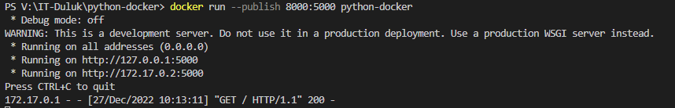
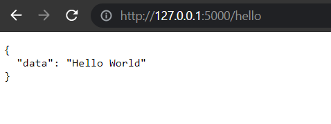

How to Deploy a Node.js Application with Docker?
Requirements
This script assumes that you have a Node.js application with a package.json file and a start script specified in it. If you don't have an existing Node.js application, you can create a simple one by running npm init and npm install express.
Create a Dockerfile
First we will write a Dockerfile. We will use an official Node.js runtime as the base image
FROM node:14
Next we set the working directory in the container
WORKDIR /app
Now we copy the package.json and package-lock.json to the container
COPY package*.json ./
The package.json file is the heart of any Node project. It records important metadata about a project which is required before publishing to NPM, and also defines functional attributes of a project that npm uses to install dependencies, run scripts, and identify the entry point to our package. Source
The package-lock.json is automatically generated for any operations where npm modifies either the node_modules tree, or package. json . It describes the exact tree that was generated, such that subsequent installs are able to generate identical trees, regardless of intermediate dependency updates. Source
Next we install the dependencies in our case npm install will search for all and do this for us
RUN npm install
So know we copy the rest of the applicaiton code from our current directory (.) to the current directory in the container
COPY . .
Last but not least, we need to specify the command to run when the contianer starts. So we want to run npm start to start our application
CMD [ "npm", "start" ]
Build the Docker image
docker build -t my-node-app .
-t (or --tag) is the only required paramter together with the location of the files for the image and is used to give the image a name and if you want (recommended) a version.
Example -t imagename:v1.0.0
How to build a Docker image?
Use the Docker build command to build our Docker image. The build command optionally requires a --tag flag. The tag is used to specify the name of the image and an optional tag in the format name:tag. For simplicity, we'll omit the optional tag for now. If you do not pass a tag, Docker uses "latest" as the default tag.
docker build --tag python-docker .
To view your local docker images use docker images:
docker images
The Output should look like this:

How to run a Docker container?
To run an image inside a container, we use the docker run command. We need to add --publish to publish a port for our container, since our container runs in isolation, which includes networking. The format is: host port:container port
docker run --publish 8000:5000 python-docker
After running this command, you’ll notice that you were not returned to the command prompt. This is because our application is a REST server and runs in a loop waiting for incoming requests without returning control back to the OS until we stop the container.
Result:


Instead of “Hello, Docker!” python script, you can add any code you want. For example:
from flask import Flask
from flask_restful import Api, Resource
app = Flask(__name__)
api = Api(app)
class HelloWorld(Resource):
def get(self):
data={"data":"Hello World"}
return data
api.add_resource(HelloWorld,'/hello')
if __name__=='__main__':
app.run(debug=True)
Output:
